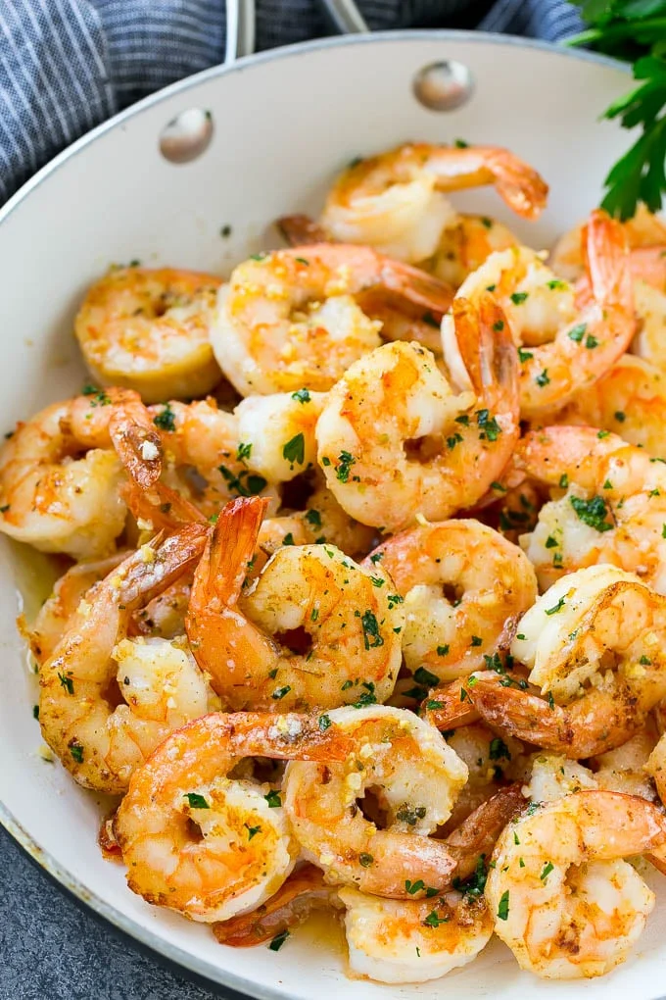

Garlic Butter Shrimp Recipe

Description
This garlic butter shrimp is quick, easy, and absolutely delicious. It's
perfect for a busy weeknight dinner.
Ingredients
- 1 pound large shrimp, peeled and deveined
- 3 tablespoons unsalted butter
- 4 cloves garlic, minced
- 1 tablespoon lemon juice
- Salt and pepper to taste
- Chopped parsley for garnish
Steps
- Melt butter in a large skillet over medium heat.
- Add garlic and sauté until fragrant, about 1 minute.
- Add shrimp, season with salt and pepper, and cook for 2-3 minutes on each side.
- Drizzle with lemon juice and garnish with parsley before serving.